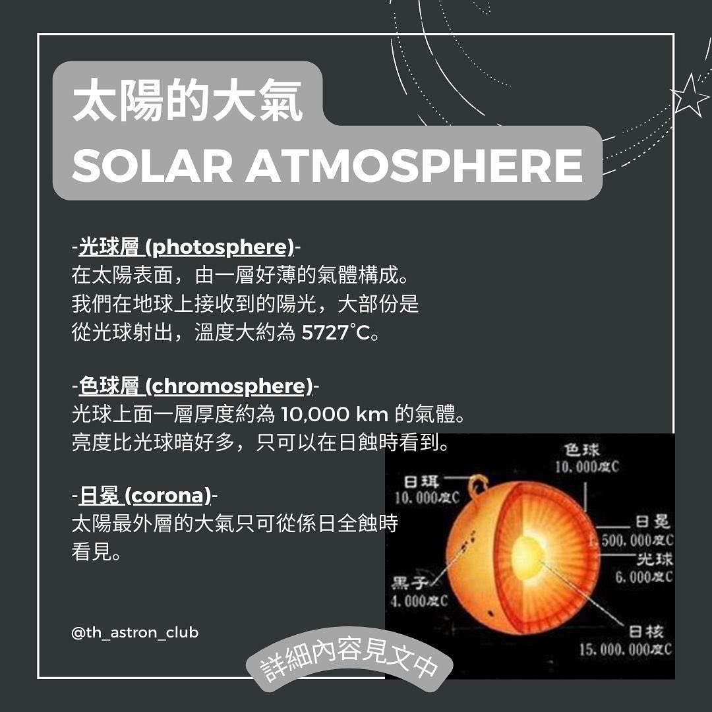
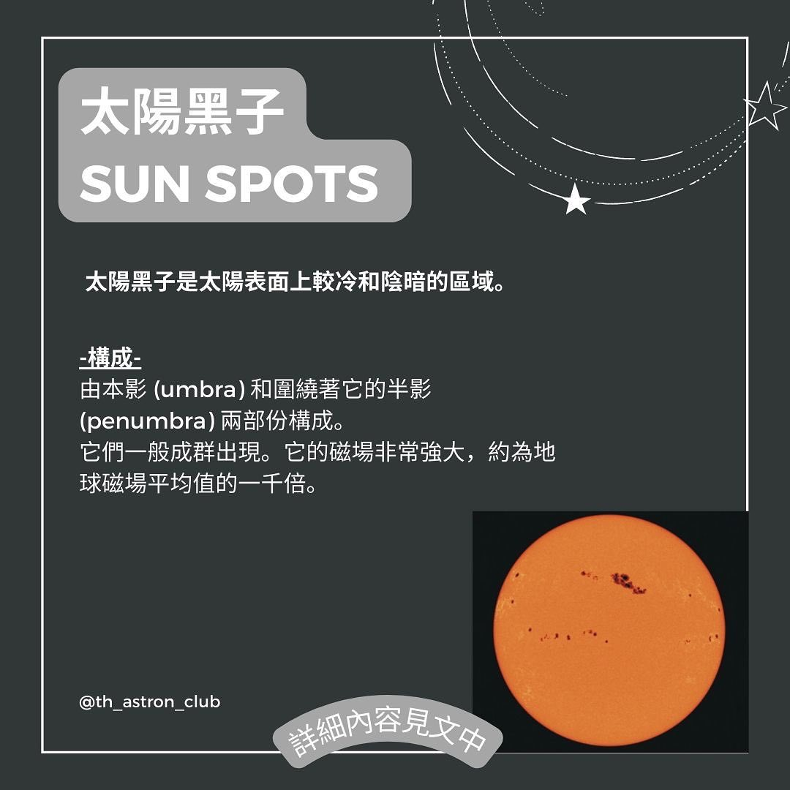
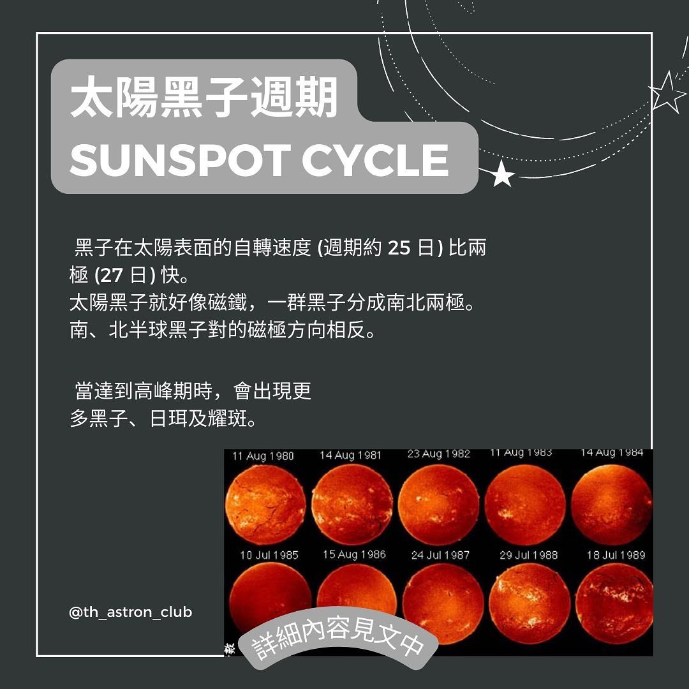

天文冷知識 EP3- 太陽的構造
大家每日抬起頭都會見到太陽。但係你哋有冇諗過太陽系嘅構造呢？
等我地黎同大家介紹下啦。
太陽系係由太陽同埋八大行星組成嘅，當中以太陽為中心
太陽嘅大氣 Solar atmosphere
首先黎認識下太陽嘅大氣(Solar atmosphere)先啦！太陽嘅大氣由光球層，色球層同日冕組成
1.1 光球層 (photosphere)係太陽表面，由一層好薄嘅氣體構成。
我們喺地球上接收到嘅陽光，大部份係從光球射出嚟，
而溫度大約係 5727°C。
1.2 色球層(chromosphere)係光球上面一層厚度
約為10000km嘅氣體。
亮度比光球暗好多，只可以喺日蝕時睇到。
頂端嘅溫度達到 1,000,000K。
1.3 日冕 (corona)係太陽最外層嘅大氣，只可從係日全蝕時看見。
- 溫度非常高 (500,000-3,500,000 K）
|
 |
太陽黑子太陽仲有啲黑子添！未聽過？一於睇埋落去啦！
黑子就係太陽表面上較冷同陰暗嘅區域。
太陽黑子係由本影(umbra)同圍繞著佢嘅半影 (penumbra) 兩部份構成
本影比半影的溫度低 (~4,000K)，因此較暗。
佢地一般成群出現。佢嘅磁場非常強大，
約為地球磁場平均值的一千倍。 |
 |
太陽黑子週期 sunspot cycle
黑子在太陽表面嘅自轉速度 (週期約 25 日) 比兩極 (27 日) 快。
太陽黑子就好似磁鐵咁，一群黑子分成南北兩極。
南、北半球黑子對的磁極方向相反。 |
 |